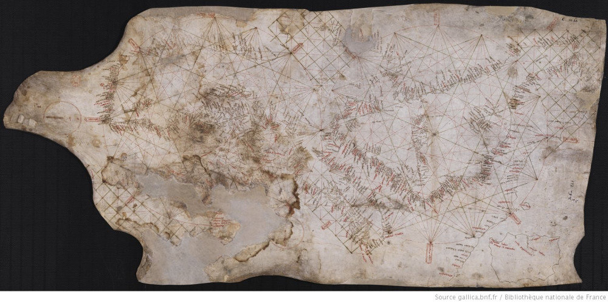
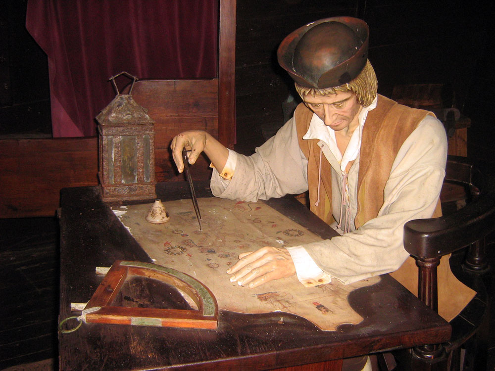
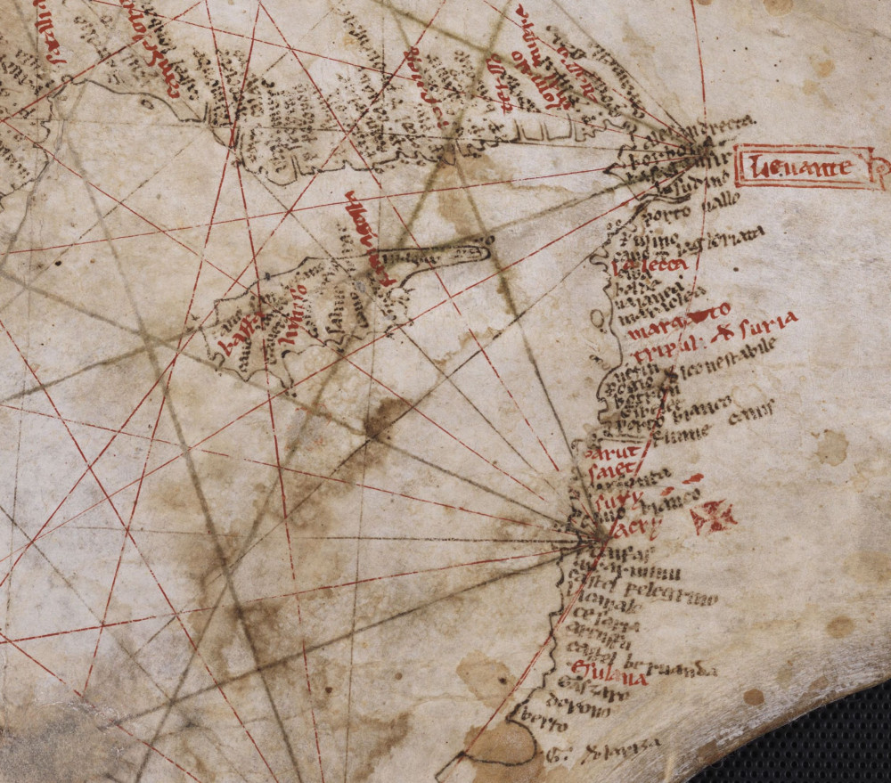
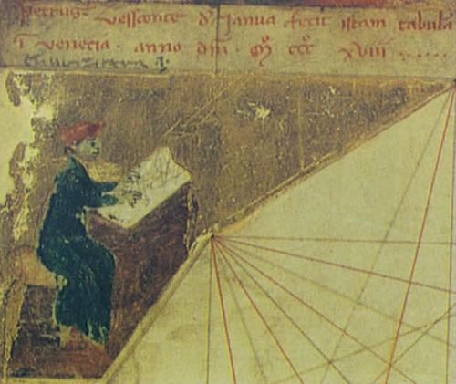
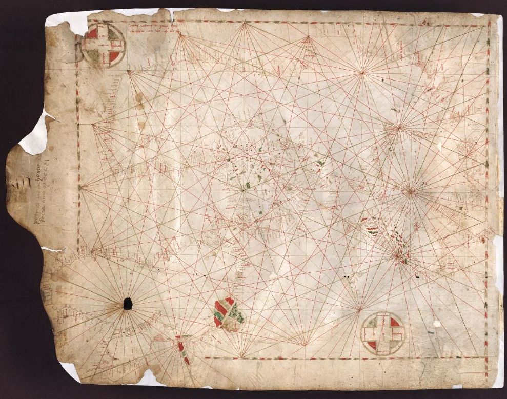
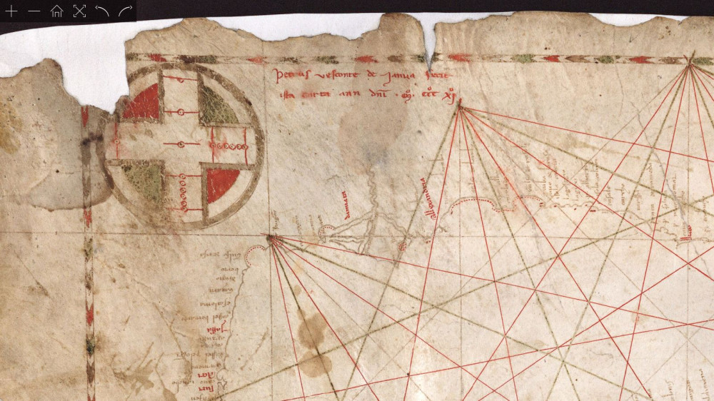
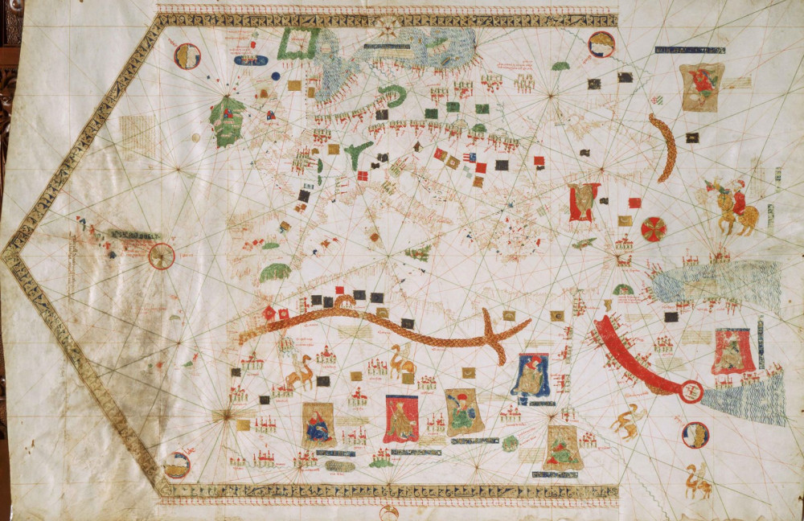

Ранее мы рассказывали о терминологии в области карт-портоланов и призывали не путать эти карты с текстовыми навигационными пособиями – портоланами. Сейчас более детально рассмотрим этот класс морских карт. Начнем с краткой их истории.
Считается, что карты-портоланы появились в конце XIII века. Первой была так называемая Пизанская карта

Пизанская карта. Куплена французским географом и археологом Edme-François Jomard в Пизе в 1839 году. Национальная библиотека Франции.
Пизанская карта исполнена на пергаменте размером 48 х 103 см, полученном из цельной шкуры (кстати, традиция не обрезать шкуру для придания ей правильной формы соблюдалась практически на протяжении всей истории портулан-карт).

Колумб в своей каюте. (Edward the Confessor)
Никаких выходных данных на карте, к сожалению, нет. Установлено, что несмотря на название, карта происходит не из Пизы, а из Генуи. История того, как Пизанская карта была объявлена родоначальницей всего класса, рассказывается по-разному разными писателями. Но в итоге создается впечатление, что произошло это так. Ученые мужи сравнили между собой все недатированные экземпляры карт-портуланов и самую потертую и замызганную из них нарекли первой. Дату ее изготовления определили (приблизительно) по вот этому красному мальтийскому крестику на территории Палестины в районе Акры (Acre), последнего владения крестоносцев на Святой Земле, павшего в 1291 году:

Совсем недавно был проведен радиоуглеродный анализ пергамента, на котором исполнена Пизанская карта. Результат – материал датируется от 1169 до 1270 г. (с вероятностью 95%). Но это сообщение поступило из Лиссабона. Держатель карты – Национальная библиотека Франции – пока хранит молчание. Присвоить карте дату 1270 г. не позволяет наличие на ней испанского Паламоса, основанного Педро III Арагонским в 1279 году. Так что, с учетом всех приведенных данных, будет правильно датировать ее описательно: конец тринадцатого века. Впрочем, имеются серьезные ученые, которые отвергают и это. Известный испанский ученый Пухадес (Ramon Josep Pujades i Bataller) считает:
If the chart had been found today instead of more than 170 years ago, it would hardly have been dated to the end of the 13th century…
Если бы эта карта была обнаружена сейчас, а не 170 лет назад, ее едва ли датировали бы концом 13-го века…
Касаясь наличия на карте Паламоса, Пухадес сомневается, что основанный в безлюдном месте новый порт вообще мог так скоро появиться на картах. На достоверно датированных картах он не встречается до 1327 года.
Относительно присутствия мальтийского креста рядом с Акрой, Пухадес утверждает, что этот крест не имеет ничего общего ни с Акрой, ни с Орденом иоаннитов. Это просто символ Иерусалима, и он появляется на некоторых генуэзских картах второй четверти XIV века, хотя и смещен немного к северу.
Практически все карты-портоланы внешне выглядят одинаково. Приблизительно в центре карты находится компасная роза с 16 или 32 румбовыми линиями. Вокруг нее по окружности располагаются вторичные розы со своими румбовыми линиями. Таким образом, вся карта покрыта сетью тонких линий разного цвета.
В самые первые годы шестнадцатого века на некоторых портолан-картах появился масштаб. Поэтому некоторые ученые считают 1500 год рубежным для истории карт-портоланов В конце XVI века на таких картах появились параллели и меридианы, а на восточном и западном полях – указания на их положение в градусах.
Мы назвали Пизанскую карту первой портолан-картой. Однако если брать не анонимные, а подписанные карты, то здесь первенство принадлежит карте генуэзского картографа Пьетро Весконте (Pietro Vesconte)

Портрет картографа, вероятно самого Пьетро Весконте, на карте его атласа 1318 г. Museo Correr, Венеция
Именно Весконте стал первым, кто ставил на своих картах подпись и дату создания. Впервые это случилось в 1311 году на портолан-карте Восточного Средиземноморья.

Пьетро Весконти. Морская карта-портолан Восточной части Средиземного моря, Черного и Азовского морей. 1511. Archivio di Stato di Firenze

Pietro Visconti, Carta nautica del Mediterraneo orientale, del mar Nero e del mar d’Azov. Фрагмент. Подписано: “Petrus Vesconte de Janua fiecit”
Известный русский историк картографии, основатель журнала Imago Mundi, Лео Багров считает, что именно с этого момента следует вести отсчет истории морских карт:
С уверенностью возникновение морской картографии можно отнести к 1311 г., когда в Генуе была создана первая датированная карта Петра Весконте. Морские карты не были больше штучным продуктом, ибо существовали профессиональные картографы, занимавшиеся их изготовлением, такие, как Петр Весконте. Он изготовил целую серию карт и атласов, причем обычно датировал свои работы.
Лео Багров, История картографии, 2004. (Пер. с англ. Н. И. Лисовой)
Портолан-карты не ограничивались акваториями Средиземного и Черного морей. В XIV веке они стали охватывать Британские острова, Северное море и Балтику. А по мере продвижения португальских мореплавателей к югу вдоль западного африканского побережья появлялись портолан-карты и этих акваторий. Портолан-карты стали важными документами, отражающими первые шаги исследователей эпохи Великих географических открытий, открытия островов в Атлантике и очертаний Западной Африки, они заложили основу для плаваний Христофора Колумба и Васко да Гама.
Всего до нас дошло около 180 карт-портоланов, выпущенных в XIV-XV вв. (до 1500 года; подробно об этом можно прочитать в обстоятельной статье Tony Campbell «Census of pre‐sixteenth‐century portolan charts», 1986). Это лишь малая часть всех карт, выпущенных в Европе за этот период. Примерно половина из них не имеют даты и имени автора. В свое время эти карты имели очень большую цену. Так, Америго Веспуччи заплатил солидную сумму за портолан-карту 1439 года каталонского картографа Габриэля де Вальсека.

Карта Габриэля де Вальсека 1439 года. Museo Marítimo, Барселона
Эта карта включала самые последние открытия, сделанные португальскими моряками под руководством принца Генриха Мореплавателя и охватывала воды Атлантики от Скандинавии на севере до Азорских и Канарских островов на юге. Карта была подписана Gabriell de Valsequa la feta en Malorcha, any MCCC.XXX.VIIII. На полях оборотной стороны карты есть надпись (Questa ampia pella di geographia fue pagata da Amerigo Vespuci - LXXX ducati di oro di marco), свидетельствующая, что этой картой владел Америго Веспуччи, заплатив за нее 80 венецианских золотых дукатов (некоторые авторы читают цифру как «130 дукатов»).
Высокие художественные достоинства и высокая цена карт-портоланов привела к тому, что с давних времен они стали объектом собирательства и выставлялись как объекты искусства. Вспомним хотя бы пример из романа Анатоля Франса «Харчевня королевы Гусиные Лапы»
Господин Блезо все больше старился. Он ушел от дел и поселился в своем деревенском домике, в Монруже, а лавку продал мне на условиях пожизненной ренты. Ставши вместо него полноправным книгопродавцем все с той же вывеской «Под образом св. Екатерины», я поселил у себя своих родителей, ибо харчевня наша с некоторых пор пришла в упадок. Во мне зародилась привязанность к скромному моему заведению, и я старался украсить его получше. По стенам я развесил старые венецианские карты и изречения, снабженные аллегорическими рисунками; спору нет, это придало лавке вид причудливый и старинный, но вместе с тем привлекло
(Курсив мой)
Впрочем, известны случаи, когда пергамент, на котором были изображены карты, пускали на книжные переплеты или использовали для своих нужд портные. Отметились в этом списке и нотариусы, которые резали старинные карты на закладки для своих книг.
Сейчас портолан-карты присутствуют на самых престижных аукционах и пользуются спросом у нуворишей.
О технических деталях портолан-карт поговорим в следующий раз.